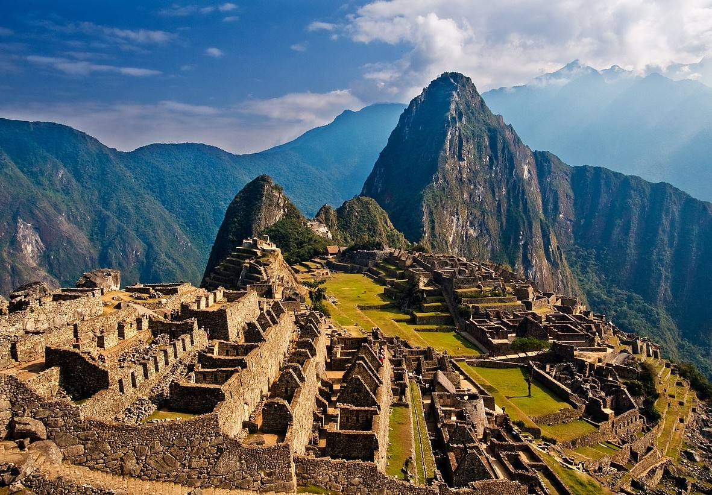
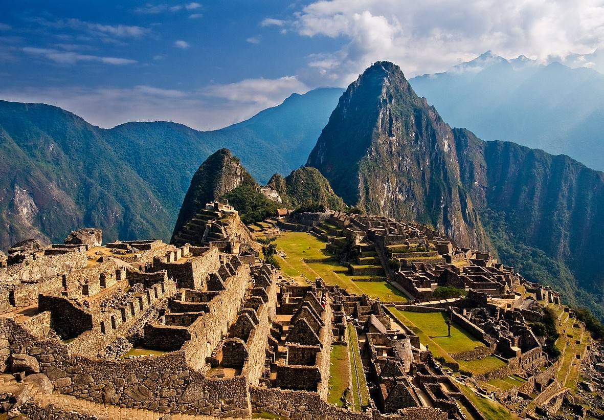

Galileo di Vincenzo Bonaiuti de' Galilei was an Italian astronomer, physicist and engineer, sometimes described as a polymath. Commonly referred to as Galileo, his name was pronounced. He was born in the city of Pisa
What was Galileo famous for?
His inventions, from compasses and balances to improved telescopes and microscopes, revolutionized astronomy and biology. Galilleo discovered craters and mountains on the moon, the phases of Venus, Jupiter's moons and the stars of the Milky Way.
What inspired me about Galileo?
The fact that Galileo invented and discovered even if it was against popular belief.
Who is Ozzy Osbourne?
John Michael "Ozzy" Osbourne (born 3 December 1948)[8] is an English singer, songwriter, and television personality. He rose to prominence during the 1970s as the lead vocalist of the heavy metal band Black Sabbath, during which period he adopted the nickname "Prince of Darkness".
What was Ozzy famous for?
Ozzy Osbourne rose to fame in the 1970s as the frontman of the seminal heavy metal band Black Sabbath, delivering such iconic songs as "War Pigs," "Iron Man" and "Paranoid." He embarked on a successful solo career in 1979, earning attention for his outrageous public acts and drawing the ire of conservative groups.
What inspired me about Ozzy?
Ozzy's drive and can't stop attitude.
Ozzy Osbourne - Live & Loud (1993) Warning: For Mature audiences
Mike Tyson
Who is Mike Tyson?
Michael Gerard Tyson (born June 30, 1966) is an American former professional boxer who competed from 1985 to 2005. Nicknamed "Iron Mike" and "Kid Dynamite" in his early career, and later known as "The Baddest Man on the Planet", Tyson is considered to be one of the greatest heavyweight boxers of all time.
What was Mike famous for?
He reigned as the undisputed world heavyweight champion from 1987 to 1990. Tyson won his first 19 professional fights by knockout, 12 of them in the first round. Claiming his first belt at 20 years, four months, and 22 days old, Tyson holds the record as the youngest boxer ever to win a heavyweight title.
What inspired me about Mike?
Mike Tyson inspires people because he worked hard and trained every day to do what he loved. From his rocky start as a boy who was constantly picked on and causing trouble to youngest heavyweight champion. Mike Tyson is inspirational because he became the very best despite his poor background.
Iron Mike Tyson Highlights
Matt Stone and Trey Parker
Who is Matt Stone?
Matthew Richard Stone (born May 26, 1971) is an American actor, animator, writer, producer, and composer. He is known for co-creating South Park (1997-present) and co-developing The Book of Mormon (2011)
Who is Trey Parker?
MRandolph Severn "Trey" Parker III is an American actor, animator, writer, producer, director, and composer. He is known for co-creating South Park (1997-present) and co-developing The Book of Mormon (2011)
What was Matt and Trey famous for?
Creating the animated series South Park and the play The Book of Mormon.
What inspired me about Matt and Trey?
What inspired me about Matt and Trey is commitment to sattire and creativeness.Ancient Ruins
What are some examples of Ancient Ruins?
To list a few ruins:
Bagan - Myanmar
Angkor Wat - Cambodia
Terracotta Warriors
Ayutthaya - Thailand
Pantheon- Rome
Petra - Jordan
Machu Picchu
Great Pyramids of Egypt
Where are some of these Ancient Ruins located?
They are located all over the world, I would almost say every region of the world has a form of ancient ruins to explore.
What inspires me about these Ancient Ruins?
I love to see these feats of engineering and creations that were built so long ago with such primitive tools and methods. Anime
What are some examples of Anime?
Animes come in all sorts of forms from, Action, adventure, fighting, super hero, samurai, assassins, gods, cooking, basketball, volleyball, reincarnation, pirates, ninjas, or wizards. Below are a few of my favorites moments or scenes.
Uzui & Tanjiro vs Gyutaro Final Fight, Zenitsu vs Daki - Demon Slayer
Saitama Vs Carnage Kabuto - One Punch Man
Zoro vs Ain - One Piece Movie Z
Goku vs Jiren battle during the Tournament of Power - Dragonball Super
What is it about Anime that you like?
I love the animations, quirky characters, and story lines.


 
